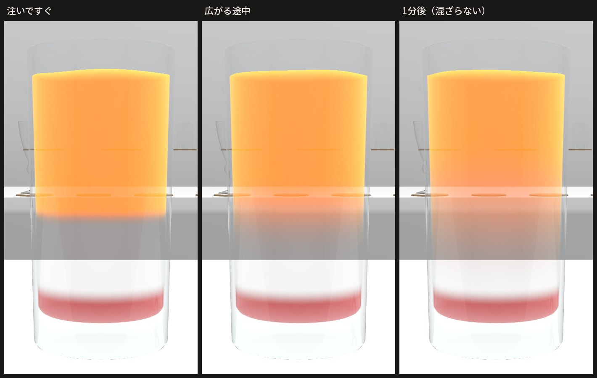
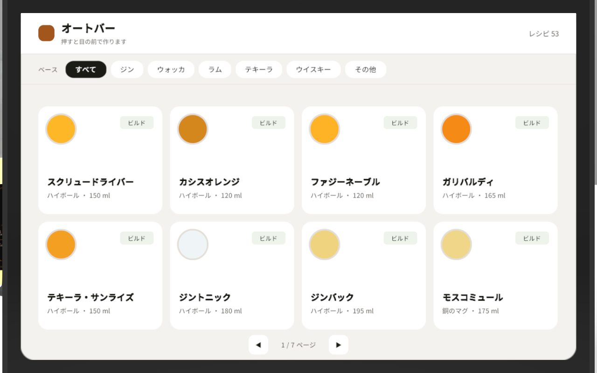
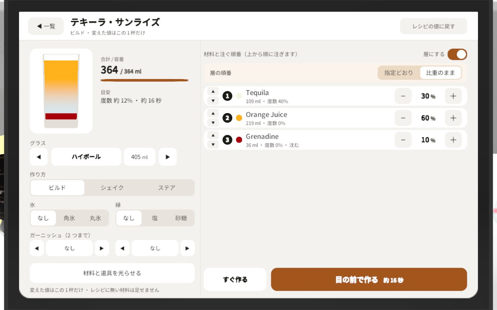
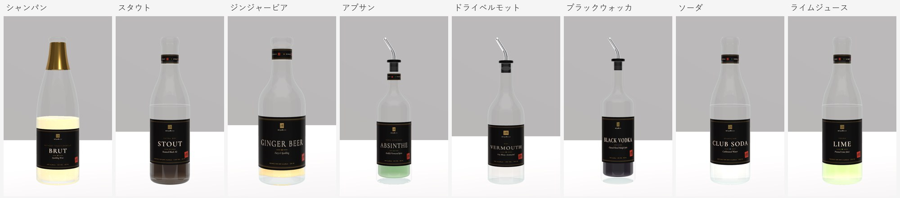
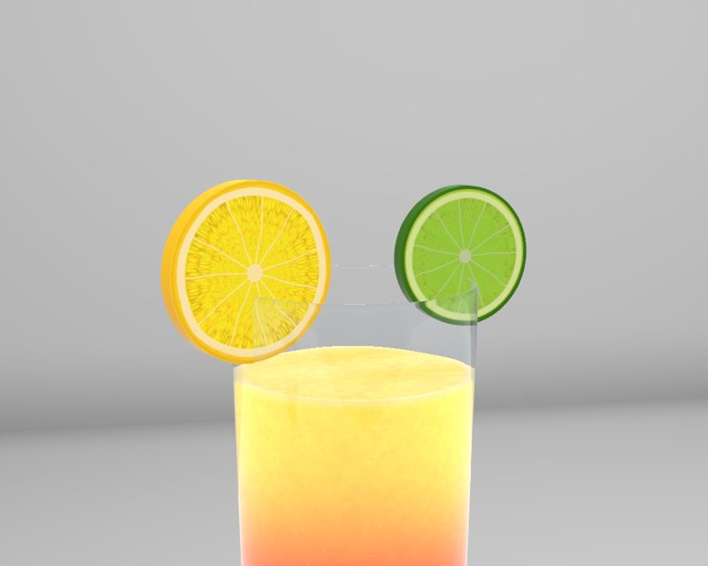

カクテル調合ギミック ガイド
テキーラ45ml、オレンジジュース90ml、最後にグレナデン15ml。
グレナデンは後から注いでも底まで沈み、赤い層になります。テキーラとオレンジジュースの境目だけがグラデーション状に広がり、バースプーンで混ぜると1色になります。VRChatのPCワールド向けのカクテル調合ギミックで、グラスの中身は注いだ材料と量から毎回計算されます。VRでもDesktopでも作れて、作り方を知らない人はタブレットのオートバーから一杯を注文できます。
発売前の版です（2026-11-23時点の実装）。商品名、価格、版番号、規約の文面は発売時に確定します。

- 傾けた分だけ注げる瓶を深く傾けるほど速く注がれます。メジャーカップで45mlと30mlを量ることもできます。
- 液体が本当に混ざる注いだ順に層が積もり、重いリキュールは沈みます。シェイクすると泡と濁りが出て、ステアなら透明なまま混ざります。
- Desktopでもバーテンダー役ができる注ぐ・量る・振る・混ぜる・絞る・氷を入れるといった操作も、VRでなくてもUseの短押しと長押しで行えます。
概要
動作環境
- VRChatのPC版（Windows）専用です。ガラスの屈折にGrabPassを使うため、Quest・Android・iOSでは動きません。
- Unity 2022.3.22f1、VRChat SDK - Worlds 3.10.5（UdonSharpを含む）で動作確認しています。
- VRC Light VolumesとlilToon（どちらもVCCから導入）が必要です。Light Volumesが入っていないとガラスと液体が、lilToonが入っていないと瓶のラベルと金属の道具が表示されません。VRC Light Volumes 2.1.3、lilToon 2.3.4で確認しています。
- このパッケージだけで動きます。別の商品であるワールド版のカクテルギミックを入れる必要はありません。
- 操作はVRとDesktopの両方に対応しています。
ワールドに置く（購入した方へ）
導入方法
ワールドのプロジェクトを開く
VCCでSDK、VRC Light Volumes、lilToonが入ったワールドのプロジェクトを開きます。新しく作る場合は、VCCの「World」テンプレートから作ってください。
unitypackageをインポートする
ダウンロードした .unitypackage をUnityのProjectウィンドウへドラッグし、すべてにチェックが入ったままImportを押します。
使うものを選んで置く
Prefabsフォルダの中は、瓶のBottles、グラスのGlasses、それ以外（道具・ガーニッシュ・コースターなど）のOthersに分かれています。使いたいものを1つずつシーンへドラッグします。置いたものだけで動きます。最初の1つを置くと、本体
miyaBase_MixCore（Othersの中）が自動でシーンに入ります。レシピと、ドライアイスの煙・炎の演出が入っているので、消さないでください。本体はシーンに1つだけ置きます。置くもの Prefab 瓶 BottlesフォルダのmiyaBase_MixBottle_（ジンは…_Ginなど）。同じ瓶を2本置いてもかまいませんグラス GlassesフォルダのmiyaBase_MixGlass_（ハイボールは…_Highballなど）。置いた位置が定位置で、ベルや流しで空になってそこへ戻ります片付け ここから下はすべて Othersフォルダです。ベルmiyaBase_MixResetBell、流しmiyaBase_MixResetArea_Sinkオートバー miyaBase_MixAutoBar道具 シェーカー miyaBase_MixShaker、ミキシンググラスmiyaBase_MixMixingGlass、バースプーン、ジガー、ビーカー、トング、氷バケツ、レモン絞り器 など氷・縁・飾り 丸い氷 miyaBase_MixIceBallBox、ドライアイスmiyaBase_MixDryIceBox、塩と砂糖の皿miyaBase_MixRimPlates、ガーニッシュmiyaBase_MixGarnish_とトレイmiyaBase_MixGarnishTraysそのほか 味と度数の札 miyaBase_MixTasteSwitch、果物の板miyaBase_MixFruitBoard、エリクシルの木箱miyaBase_MixElixirCase、コースターmiyaBase_MixCoasterレシピは置いたもので決まる 材料の瓶とおすすめのグラスがすべて置かれているレシピだけが有効になります。有効なレシピは、グラスにカクテル名が表示され、オートバーの一覧にも並びます。たとえば瓶をジン、トニック、スコッチ、ソーダにしてハイボールグラスを置くと、ジントニックとハイボールが作れます。
組み合わせて使うもの レモンとライムの半分（
miyaBase_MixLemonHalf/miyaBase_MixLimeHalf）は、レモン絞り器と、レモン（ライム）ジュースの瓶を置いたときにレシピの材料として数えます。角砂糖を熱い飲み物に溶かすには、シンプルシロップの瓶が要ります。まとめて置いたとき 何個かまとめてドラッグすると同じ場所に重なります。選んだまま Hierarchy で右クリックし、
miyaBase→Line Up Selectedを選ぶと、最後に選んだものから一列に並びます。カクテルを作れるユーザーを限定する場合、許可プレハブを置く
イベントなどで決まった人だけに作らせたいときは、「注ぐ許可」を置きます。置かなければ誰でも注げます。手順は設定にあります。
照明を整える
カウンターの近くにリフレクションプローブを1つ置き、ライトをベイクしてください。ガラスと液体は、周りの映り込みで見え方が変わります。
アップロードして、VRとDesktopで試す
Build & Publishでアップロードします。瓶を持ってグラスに注げることを確かめたら、導入は完了です。
設定
カクテルを作れるユーザーを限定
「注ぐ許可」（Prefab miyaBase_MixPourPermission）をシーンに置き、注げる人の表示名を登録します。インスタンスのオーナーは、登録しなくても注げます。「注ぐ許可」を置かなければ、誰でも注げる状態です。飲むことは、許可がなくても誰でもできます。
「注ぐ許可」を置くと、オートバーのタブレットで作れるのも許可のある人だけになります。タブレットは誰でも使えるようにしたいときは、「注ぐ許可」の Restrict Auto Bar のチェックを外してください。
「注ぐ許可」を置いた場合、リセットのベルを押せるのも許可のある人だけです。
味と度数の表示の初期値
本体 miyaBase_MixCore の中の _MixBar の Show Taste で決めます。オンにすると最初から表示されます。遊ぶ人は、カウンターの札で自分の画面の表示・非表示をいつでも切り替えられます。
レシピを足す・消す
レシピを複製する
Hierarchyで本体
miyaBase_MixCoreの中のRecipesを開き、近いレシピのオブジェクトを複製します。名前と材料を変える
Inspectorでカクテル名、使う瓶と割合、作り方（どれでも・シェイク・ステア・ビルド）、おすすめのグラスを設定します。瓶とグラスは種類で選びます。まだ置いていないものには「未配置」と出ます。
そのままアップロード
レシピはPlayとアップロードのときに自動で集められ、オートバーの一覧にも出ます。材料の瓶かおすすめのグラスを置いていないレシピは、自動で外れます。
使わないレシピは、オブジェクトを非表示にすれば無効になります。消す必要はありません。
遊ぶ（ワールドに来た方へ）
操作の早見表
VRでは、握っている間だけ手に持てます。Desktopでは、クリックで持ったものは離す操作をするまで手に残り、目の前に浮きます。Desktopで注ぐときはカウンターの前に立ち、瓶から横に50cm以内にあるグラスに視線を合わせてUseしてください。
| したいこと | Desktop | VR |
|---|---|---|
| グラスを取る | 置いてあるグラスを持つ | |
| ひと注ぎ | 瓶を持ってグラスを見て、Useを短く押す（量は瓶ごと。スピリッツとジュースは主に45ml、リキュールは10〜30ml、レモン・ライムは20ml、炭酸は90ml、ビターズは3ml など） | Desktopと同じ。または瓶をグラスの上で傾ける |
| 好きな量を注ぐ | Useを押し続ける。離すまで毎秒20ml注がれる | グラスの上で瓶を傾ける。深く傾けるほど速く出る |
| 正確に量る | メジャーカップに注ぎ、カップを持ってグラスを見てUse。空の状態でUseすると、45ml側と30ml側をひっくり返せる | カップに注ぎ、グラスの上で傾ける。逆さにするとこぼれる |
| シェイク | シェーカーを持ってUseで蓋を閉めて振る。もう一度Useでグラスへ注ぐ。入りきらない分はシェーカーに残り、次のグラスに注げる | シェーカーを持って振る。傾けてグラスへ注ぐ |
| ステア | バースプーンを持ってミキシンググラスを見て、Use | スプーンを中で3回ほど回す |
| 氷を入れる | トングを持って氷バケツを見てUseでつかみ、グラスを見てもう一度Use | トングの先を氷に近づけてUse、グラスの上でもう一度Use |
| トングを使わずに氷を入れる | グラスを持ち、縁を氷バケツの氷に当てる。当てている間、満杯まで1個ずつ入る | |
| 丸い氷 | トングでトレーからつかみ、ロック・ハイボール・銅のマグ・ドクロのグラスに入れる | |
| ドライアイス | トングで箱からつかみ、好きなグラスに入れる。しばらく白い煙があふれる | |
| レモン・ライムを絞る | 半分に切った果物を持って絞り器を見て、Use | 絞り器の山に切り口を下にして当て、押しながらひねる |
| 縁に塩・砂糖 | グラスを持って塩（砂糖）の皿を見て、Use | グラスを逆さにして、縁を皿に押し当てる |
| 飾りを付ける | トレイの飾りを持ってグラスを見て、Use | グラスの上で手を離す |
| グラスからグラスへ移す | 飲むグラスどうしは移せない（Useは飲む）。ミキシンググラスやビーカー（シェーカーは振ったあと）を持ち、移し先のグラスに視線を合わせてUse | 持ったグラスを移し先のグラスの上で傾ける。上の層から移る |
| 飲む | グラスを持ってUse（ひと口ずつ。ショットはひと口で飲み干す） | 口元でグラスを傾ける |
| 乾杯 | グラス同士を当てると音が鳴る | |
| 中身を捨てる | グラスを持ち、流し台に視線を合わせて離す（グラスごと置いた位置へ片付く） | グラスを流し台に入れる。グラスの縁をベルに当てると、中身だけ捨てる |
| 全部元に戻す | リセットのベルを押す | |
Desktopで注げないとき Useの表示が「近くにグラスがありません」に変わったら、瓶とグラスが離れすぎています。カウンターの前まで進んでください。
オートバー（タブレット）
カウンターのタブレットでレシピを選ぶと、その一杯をギミックが自動で作ります。VRでは指で画面に触れるかレーザーで、Desktopではクリックで操作します。

レシピを選ぶ
一覧でベースのお酒（ジン、ウォッカ、ラム、テキーラ、ウイスキー、その他、自作）を選んで絞り込み、カードを押します。
好みに変える
グラス、作り方（ビルド・シェイク・ステア）、氷（なし・角氷・丸氷）、縁（なし・塩・砂糖）、ガーニッシュ2つ、材料の順番と割合を変えられます。割合は合計100%で、100%のときにグラスの口いっぱいまで入ります。
層にするか決める
ビルドで「層にする」を選ぶと、混ぜずに層のまま仕上げます。「指定どおり」は注ぐ順に下から重ね、「比重のまま」はグレナデンのような重い材料を底へ沈めます。左のグラスのイラストが仕上がりの見本です。軽い液体の上に重い液体が重なる境目は、実物と同じく見本のイラストでもグラデーションになります。
作る
「目の前で作る」を押すと、タブレットの上にグラスが出て、瓶やシェーカーが浮いて来て注ぐ演出が流れます。「すぐ作る」を押すと、演出なしで1秒ほどで完成します。途中で「やめる」を押すと、それまでに入った分はグラスに残ります。

カスタマイズ画面の「材料と道具を光らせる」を押すと、そのレシピで使う瓶、グラス、道具が光ります。手で作るときも、光っているものを手に取れば材料がそろいます。もう一度押すと消えます。
オートバーで作った一杯にも、手で作った一杯と同様に名前が付きます。
自分のレシピを作る
タブレットの「＋ レシピを作る」で、手で注いだ一杯をレシピとして残せます。
グラスを出す
グラスを選び、「グラスを出して始める」を押すと、タブレットの上にグラスが出ます。
手で注ぐ
瓶から注いだ材料の順番と量が、画面に記録されていきます。シェーカーから注いでも材料ごとに記録され、同じ瓶を分けて注いだ分は1行にまとまります。
名前を付けて保存する
名前を入力して保存すると、一覧の「自作」に出ます。名前が空欄なら「マイレシピ」と番号が付きます。以降は、同じ配合で作ったグラスにもその名前が表示されます。
- 自作のレシピは自分のアカウントに保存され、ワールドに入り直しても残ります。1人20件までです。
- 同じインスタンスの人のタブレットにも、作った人の名前つきで表示され、その人も作れます。
- 消せるのは自分のレシピだけです。詳細画面の「削除」を押してください。
液体のしくみ
どんな配合でも、グラスはその配合どおりの色になります。完成の見た目をあらかじめ用意しているのではなく、注いだ材料と量から層と色を毎回計算しています。
- 材料は注いだ順に下から積もります。グレナデンとカシスは重いので、後から注いでも底へ沈みます。
- 境目の見え方を決めるのは比重です。上の液体が下より軽ければ、境目はくっきり残ります。上の液体のほうが重いか、ほぼ同じ重さなら、境目はグラデーション状に広がります。重い液体が上なら数秒、ほぼ同じ重さなら20秒から1分ほどで広がりきります。
- 注いだだけでは1色になりません。グラデーションは広がりきったところで止まります。
- 1色にするには、ステアするか、シェイクするか、グラスを持って揺すってください。
- シェイクすると白っぽい濁りと泡の層が出て、泡は少しずつ消えます。ステアすると透明感が残ります。
- 氷は時間がたつと小さくなります。溶けた水の分だけ量が増え、度数も下がるしくみです。氷とシェイク・ステアすると、その場で少し水が加わります。
- 結露が付くのは、氷が入っているときと、氷で冷やした飲み物を注いだときです。常温の瓶から注いだだけのグラスは結露しません。
比重で並んだリキュール
リキュールは比重の重い順に並んでいます。重い順に静かに注ぐと、プースカフェのような層が作れます。キュラソーとマラスキーノのように比重がほぼ同じもの同士は、境目がグラデーションになります。
色が変わる材料
バタフライピー・ジンの青は、レモンやライムを入れると紫を経てピンクに変わります。混ぜてあれば速く、層のままならゆっくり変わります。卵白を入れてシェイクすると、白い泡の層がのります。
特別な作り方
アブサンのドリップ
ポンタルリエグラスにアブサンを注ぎます。アブサンスプーンをグラスの口に橋渡しするように置き、角砂糖をスプーンに載せます。カラフェの冷水を角砂糖の上から注ぐと、水の筋が沈み、グラスの下から白く濁っていきます。スプーンが載っている間は飲めません。グラスを持ってUseするか大きく傾けると、スプーンが外れます。
ハーブのエリクシル
木のケースに入った小瓶のハーブリキュールで、数滴ずつ注げます。DesktopではUseの短押しで1回2ml、長押しでゆっくり注がれます。スプーンに載せた角砂糖に垂らすと砂糖が吸い込み、あふれた分だけグラスに入ります。染みた角砂糖は、グラスを持ってUseすると食べられます。
名前・味・度数
中身の材料の割合が登録済みのレシピに近いと、グラスを指したときの表示がそのカクテルの名前に変わります。割合が外れていれば、表示は「ハイボールグラス」のようなグラスの名前のままです。点数や正解はありません。
- 判定に使うのは材料の割合です。量が半分でも、比率が合えば同じ名前になります。各材料の割合には±30%ほどの幅があります。
- シェイク、ステア、ビルドのどれで作るかが決まっているレシピもあります。たとえばプースカフェは、混ぜると名前が消えます。ソルティ・ドッグは塩の縁が必要です。
- 名前の下に、度数と甘・酸・苦の目安が3段階で出ます。名前の付かない自由な一杯にも出ます。
- 味と度数の表示は、カウンターの札で自分の画面だけ出す・隠すを切り替えられます。
一覧
グラスと氷の対応表
丸い氷が入るのは、ロック、ハイボール、銅のマグ、ドクロの4種だけです。角氷はどのグラスにも入り、入る数はグラスごとに決まっています。
| グラス | 角氷 | 丸い氷 |
|---|---|---|
| ポンタルリエグラス | 3個まで | ー |
| ビアグラス | 4個まで | ー |
| ハリケーングラス | 4個まで | ー |
| コリンズグラス | 4個まで | ー |
| ハイボールグラス | 4個まで | 〇 |
| 銅のマグ | 3個まで | 〇 |
| ロックグラス | 1個まで | 〇 |
| アイリッシュコーヒーグラス | 2個まで | ー |
| ワイングラス | 2個まで | ー |
| シャンパンフルート | 3個まで | ー |
| クープグラス | 1個まで | ー |
| マティーニグラス | 1個まで | ー |
| マルガリータグラス | 1個まで | ー |
| ショットグラス | 1個まで | ー |
| プースカフェグラス | 1個まで | ー |
| ゴシックゴブレット | 2個まで | ー |
| 大釜グラス | 3個まで | ー |
| ハロウィンクープ | 1個まで | ー |
| 電球グラス | 3個まで | ー |
| ブーツグラス | 4個まで | ー |
| ドクログラス | 1個まで | 〇 |
| シェーカー | 4個まで | ー |
| ミキシンググラス | 5個まで | ー |
- 丸い氷は1個まで入ります。角氷と丸い氷を、同じグラスに一緒に入れることはできません。
- ドライアイスは、飲むグラスならどれにも入ります。氷が入っていても入れられます。
- シェーカーとミキシンググラスには、トングで角氷を入れます。グラスの縁を氷バケツに当てて入れる方法は、飲むグラスだけで使えます。
瓶・グラス・道具
瓶（56本）
瓶は減りません。何杯でも注げます。注ぎ口は、右手で持ったときに注ぎやすい向きにそろえています。

スピリッツ 8
ドライジン、ウォッカ、ホワイトラム、テキーラ、バーボン、スコッチ、アブサン、バタフライピー・ジン
リキュール 12
カシス、ピーチ、ブルーキュラソー、トリプルセック、ビター、コーヒー、バナナ、メロン、マラスキーノ、グリーン・ハーブ、ドライベルモット、ハーブのエリクシル
ワイン・ビール 2
シャンパン、スタウト
炭酸 5
ソーダ、トニック、コーラ、ジンジャーエール、ジンジャービア
ジュース 6
オレンジ、パイナップル、クランベリー、グレープフルーツ、レモン、ライム
シロップほか 5
シンプルシロップ、グレナデン、ココナッツクリーム、アロマティック・ビターズ、卵白
水・お湯・コーヒー 3
冷水のカラフェ、お湯のやかん、ホットコーヒーのポット
ハロウィン 5
ブラックウォッカ、ブラッドベリー、ソーサラーズ・アップル、ナイトシェード、ゴブリンの霊薬
クリスマス 10
赤ワイン、スパイスシロップ、ブランデー、スパイスト・ラム、バニラウォッカ、ペパーミント・シュナップス、ホワイトカカオ・リキュール、バニラクリーム・リキュール、エッグノッグのピッチャー、ホットココアの片手鍋
グラス（21種）
ポンタルリエ、ビア、ハリケーン、コリンズ、ハイボール、銅のマグ、ロック、アイリッシュコーヒー、ワイン、シャンパンフルート、クープ、マティーニ、マルガリータ、ショット、プースカフェ、ゴシックゴブレット、大釜、ハロウィンクープ、電球、ブーツ、ドクロ。
グラスは1個ずつ置きます。置いた位置がそのグラスの定位置で、ベルか流しで空になってそこへ戻ります。飲み干すと、氷、飾り、縁の塩や砂糖はグラスから消えます。
出せるグラスを増やすとき 同じ種類のグラス（miyaBase_MixGlass_）をもう1個置いてください。1個ずつ別のグラスとして働き、置いた位置がそれぞれの定位置です。オートバーは空いている同じ種類のグラスを使い、全部使われているときは「空いている〇〇がありません」と出ます。
ガーニッシュ（13種）
レモン、レモンピール、オレンジ、オレンジピール、ライムの輪切り、チェリー、ミント、オリーブ、カクテルオニオン、ブルーベリー、きゅうり、ローズマリー、シナモン。種類ごとのトレイに載っており、取ってもなくなりません。

道具
シェーカー、ミキシンググラス（ストレーナー付き）、バースプーン、メジャーカップ（45ml/30ml）、ビーカー、レモン絞り器、アイストング、氷バケツ、丸い氷のトレー、ドライアイスの箱、塩と砂糖の皿、アブサンスプーン、角砂糖、流し台、オートバーのタブレット、味と度数の札、リセットのベル。
困ったとき
FAQ
- ガラスや液体が見えない、ピンク色になる
- VRC Light VolumesとlilToonが入っているか確認してください。Quest・スマートフォンでは表示されません。
- Desktopで瓶を持ってUseしても注がれない
- 注ぐのは瓶から横に50cm以内のグラスだけです。カウンターの前まで進み、注ぎたいグラスを見てUseしてください。「注ぐ許可」を置いている場合は、許可のない人は瓶を持てません。
- オートバーで「注ぐ許可のある人だけが作れます」と出る
- 「注ぐ許可」を置いていると、タブレットで作れるのも許可のある人だけです。誰でも作れるようにするには、「注ぐ許可」の
Restrict Auto Barのチェックを外してください。 - 配合どおりに作ったのに名前が出ない
- ひと注ぎの量は瓶ごとに決まっています（スピリッツは主に45ml、レモン・ライムは20ml、ビターズは3ml など）。ひと注ぎの量とレシピの分量が合わない材料は、長押しで少しずつ注いで調整してください。シェイクやステアが指定されているレシピは、その方法で混ぜる必要があります。
- 注いだのに混ざらない
- 仕様です。注いだだけでは層とグラデーションのままです。ステア、シェイク、グラスを揺するのどれかで1色になります。
- VRで手を離すと落ちる
- VRでは握っている間だけ持つ仕様です。Desktopでは、離す操作をするまで持ったままです。
- オートバーでグラスが出ない
- 同じ種類のグラスが全部使われています。流し台で片付けるか、ベルを押してください。
- レシピの名前が出ない、オートバーの一覧に出ないレシピがある
- そのレシピの材料の瓶か、おすすめのグラスがシーンに置かれていません。置くと、次のPlay・アップロードから使えます。自分で保存したレシピも、瓶が足りないワールドでは一覧に出ません（保存した内容は消えません）。
- 「MixBar が 2 個あります」と出る
- 本体
miyaBase_MixCoreがシーンに2つあります。1つを消してください。
利用規約・サポート
VN3ライセンスに準じます（ショップ共通）。ワールドへの組み込み、改変は自由です。素材そのものの再配布はできません。
同梱している第三者の素材（フォントのNoto Sans JP、効果音、マットキャップ）の出典とライセンスは、パッケージ内の THIRD_PARTY_NOTICES.txt にあります。
不具合の報告と要望は、BOOTHのメッセージか要望フォームから受け付けています。報告のときは、Unityのバージョン、SDKのバージョン、VRかDesktopか、起きたことと手順を添えてください。届いた報告にはすべて目を通して返信します。